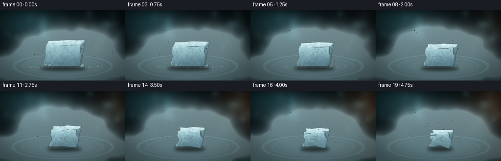
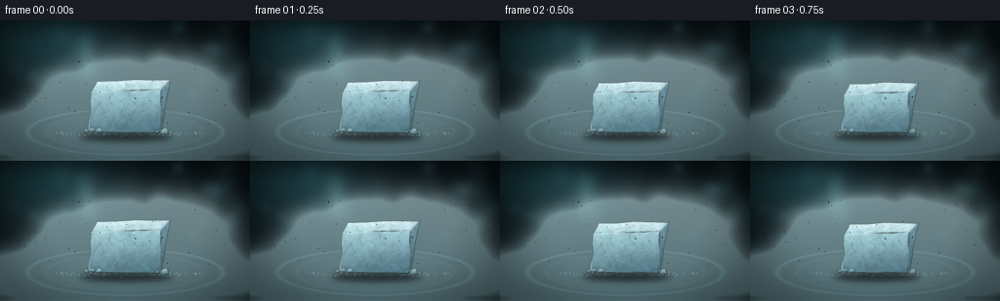

CODING AGENTS AS PIXEL WORLD MODELS
traex/DeepSeek-V4.1-Flash · phygen_116
点击播放 · 原生 RGB 像素
逐轮保存的候选
回放视频、检查图与代码变化。
每份候选均可单独播放。实际图片检查记录在下方工具轨迹中。
候选 01播放与检查图
点击播放 · 原生 RGB 像素


展开代码变化
--- 上一保存版本
+++ 本次保存版本
@@ -0,0 +1,638 @@
+from pathlib import Path
+import math
+
+import cv2
+import numpy as np
+from PIL import Image
+
+import artifact_io
+
+
+CASE_DIR = Path(__file__).resolve().parent
+W, H = 256, 144
+SS = 3
+RW, RH = W * SS, H * SS
+N, FPS = 20, 4.0
+
+
+def smoothstep(edge0, edge1, value):
+ x = np.clip((value - edge0) / (edge1 - edge0), 0.0, 1.0)
+ return x * x * (3.0 - 2.0 * x)
+
+
+def normalized(field):
+ lo, hi = float(field.min()), float(field.max())
+ return (field - lo) / max(hi - lo, 1e-6)
+
+
+def fractal_field(rng, width, height, scales, weights=None):
+ if weights is None:
+ weights = [1.0 / (index + 1) for index in range(len(scales))]
+ out = np.zeros((height, width), np.float32)
+ for cells, weight in zip(scales, weights):
+ ch = max(2, int(cells * height / width))
+ small = rng.random((ch, cells), dtype=np.float32)
+ out += weight * cv2.resize(small, (width, height), interpolation=cv2.INTER_CUBIC)
+ return normalized(out)
+
+
+def soft_ellipse(field, x, y, rx, ry, angle, amount):
+ h, w = field.shape
+ extent = 2.8
+ x0 = max(0, int(math.floor(x - extent * max(rx, ry))))
+ x1 = min(w, int(math.ceil(x + extent * max(rx, ry))) + 1)
+ y0 = max(0, int(math.floor(y - extent * max(rx, ry))))
+ y1 = min(h, int(math.ceil(y + extent * max(rx, ry))) + 1)
+ if x0 >= x1 or y0 >= y1:
+ return
+ yy, xx = np.mgrid[y0:y1, x0:x1].astype(np.float32)
+ ca, sa = math.cos(angle), math.sin(angle)
+ dx, dy = xx - x, yy - y
+ u = (ca * dx + sa * dy) / max(rx, 0.5)
+ v = (-sa * dx + ca * dy) / max(ry, 0.5)
+ field[y0:y1, x0:x1] += amount * np.exp(-0.5 * (u * u + v * v))
+
+
+def background(t):
+ yy, xx = np.mgrid[0:RH, 0:RW].astype(np.float32)
+ x = xx / RW
+ y = yy / RH
+
+ top = np.array([5.0, 13.0, 16.0], np.float32)
+ bottom = np.array([12.0, 24.0, 27.0], np.float32)
+ img = top + (bottom - top) * (y[..., None] ** 0.8)
+
+ cyan = np.exp(-(((x - 0.18) / 0.34) ** 2 + ((y - 0.17) / 0.28) ** 2) * 2.2)
+ img += cyan[..., None] * np.array([11.0, 29.0, 31.0], np.float32)
+
+ warm = smoothstep(0.05, 1.0, t)
+ amber = np.exp(-(((x - 0.93) / 0.31) ** 2 + ((y - 0.20) / 0.39) ** 2) * 2.0)
+ img += amber[..., None] * (np.array([35.0, 17.0, 5.0], np.float32) * warm)
+
+ # Soft, out-of-focus studio lights in the back.
+ lights = np.zeros((RH, RW), np.float32)
+ rng = np.random.default_rng(41)
+ for _ in range(18):
+ x0 = rng.uniform(0.03, 0.97) * RW
+ y0 = rng.uniform(0.04, 0.55) * RH
+ radius = rng.uniform(2.5, 9.0) * SS
+ amount = rng.uniform(0.18, 0.55)
+ soft_ellipse(lights, x0, y0, radius, radius, 0.0, amount)
+ lights = cv2.GaussianBlur(lights, (0, 0), 2.8 * SS)
+ img += lights[..., None] * np.array([36.0, 55.0, 58.0], np.float32)
+
+ return img
+
+
+def draw_tray(img, t):
+ yy, xx = np.mgrid[0:RH, 0:RW].astype(np.float32)
+ cx, cy, rx, ry = RW * 0.50, RH * 0.815, RW * 0.405, RH * 0.168
+ q = ((xx - cx) / rx) ** 2 + ((yy - cy) / ry) ** 2
+ inside = q < 1.0
+
+ radial = np.clip(1.0 - q, 0.0, 1.0)
+ tray_color = (
+ np.array([10.0, 19.0, 21.0], np.float32)
+ + radial[..., None] * np.array([7.0, 13.0, 14.0], np.float32)
+ )
+ alpha = smoothstep(1.03, 0.95, q) * 0.92
+ img[:] = img * (1.0 - alpha[..., None]) + tray_color * alpha[..., None]
+
+ rim = np.exp(-((np.sqrt(np.maximum(q, 0.0)) - 0.965) / 0.028) ** 2)
+ rim *= inside | (q < 1.02)
+ img += rim[..., None] * np.array([33.0, 57.0, 59.0], np.float32)
+
+ inner = np.exp(-((np.sqrt(np.maximum(q, 0.0)) - 0.78) / 0.020) ** 2)
+ inner *= inside
+ img += inner[..., None] * np.array([9.0, 19.0, 20.0], np.float32)
+
+ # A restrained warm reflection grows as the studio warms.
+ warm_band = np.exp(-((yy - RH * 0.88) / (RH * 0.09)) ** 2)
+ warm_band *= smoothstep(0.05, 1.0, t) * smoothstep(0.55, 1.0, xx / RW)
+ img += warm_band[..., None] * np.array([23.0, 10.0, 2.0], np.float32)
+
+
+def edge_points(a, b, count, amplitude, phase):
+ pts = []
+ ax, ay = a
+ bx, by = b
+ dx, dy = bx - ax, by - ay
+ length = max(math.hypot(dx, dy), 1.0)
+ nx, ny = -dy / length, dx / length
+ for j in range(count):
+ u = j / count
+ wobble = amplitude * (
+ 0.55 * math.sin((u * 3.0 + phase) * math.tau)
+ + 0.45 * math.sin((u * 7.0 - phase * 1.7) * math.tau)
+ )
+ pts.append((ax + dx * u + nx * wobble, ay + dy * u + ny * wobble))
+ return pts
+
+
+def rough_quad(corners, amplitude, phase):
+ out = []
+ for index, a in enumerate(corners):
+ b = corners[(index + 1) % len(corners)]
+ out.extend(edge_points(a, b, 4, amplitude, phase + index * 0.19))
+ return np.asarray(out, np.float32)
+
+
+def paint_polygon(layer, alpha, points, top_color, bottom_color, texture, texture_seed):
+ mask = np.zeros((RH, RW), np.uint8)
+ cv2.fillPoly(mask, [np.round(points).astype(np.int32)], 255)
+ mask_f = mask.astype(np.float32) / 255.0
+ mask_f = cv2.GaussianBlur(mask_f, (0, 0), 0.42 * SS)
+ ys, xs = np.nonzero(mask)
+ if len(xs) == 0:
+ return
+ y0, y1 = max(0, ys.min() - 1), min(RH, ys.max() + 2)
+ x0, x1 = max(0, xs.min() - 1), min(RW, xs.max() + 2)
+ yy, xx = np.mgrid[y0:y1, x0:x1].astype(np.float32)
+ v = np.clip((yy - y0) / max(y1 - y0 - 1, 1), 0.0, 1.0)
+ u = np.clip((xx - x0) / max(x1 - x0 - 1, 1), 0.0, 1.0)
+
+ color = top_color[None, None, :] * (1.0 - v[..., None]) + bottom_color[None, None, :] * v[..., None]
+ color += (0.5 - u[..., None]) * np.array([8.0, 6.0, 2.0], np.float32)
+
+ n = texture[y0:y1, x0:x1]
+ color *= (0.82 + 0.30 * n[..., None])
+ color += (n[..., None] - 0.5) * np.array([9.0, 11.0, 11.0], np.float32)
+ color *= 1.0 + 0.07 * math.sin(texture_seed)
+
+ m = mask_f[y0:y1, x0:x1, None]
+ layer[y0:y1, x0:x1] = layer[y0:y1, x0:x1] * (1.0 - m) + color * m
+ alpha[y0:y1, x0:x1] = np.maximum(alpha[y0:y1, x0:x1], m[..., 0])
+
+
+def paint_detail_line(layer, alpha, object_mask, points, color, thickness, opacity):
+ detail = np.zeros((RH, RW), np.uint8)
+ pts = np.round(points).astype(np.int32).reshape(-1, 1, 2)
+ cv2.polylines(detail, [pts], False, 255, max(1, int(round(thickness))), cv2.LINE_AA)
+ detail_f = detail.astype(np.float32) / 255.0
+ detail_f *= object_mask
+ detail_f = cv2.GaussianBlur(detail_f, (0, 0), 0.25 * SS) * opacity
+ layer[:] = layer * (1.0 - detail_f[..., None]) + np.asarray(color, np.float32) * detail_f[..., None]
+ alpha[:] = np.maximum(alpha, detail_f)
+
+
+def paint_ellipse(layer, object_mask, center, radii, color, opacity, angle=0.0):
+ patch = np.zeros((RH, RW), np.uint8)
+ cv2.ellipse(
+ patch,
+ (int(round(center[0])), int(round(center[1]))),
+ (max(1, int(round(radii[0]))), max(1, int(round(radii[1])))),
+ angle,
+ 0,
+ 360,
+ 255,
+ -1,
+ cv2.LINE_AA,
+ )
+ m = patch.astype(np.float32) / 255.0
+ m = cv2.GaussianBlur(m, (0, 0), 0.38 * SS) * object_mask * opacity
+ layer[:] = layer * (1.0 - m[..., None]) + np.asarray(color, np.float32) * m[..., None]
+
+
+def render_block(img, t, texture):
+ layer = np.zeros((RH, RW, 3), np.float32)
+ alpha = np.zeros((RH, RW), np.float32)
+
+ rng = np.random.default_rng(1701)
+ shrink_w = 1.0 - 0.46 * t
+ shrink_h = 1.0 - 0.40 * t
+ cx = RW * 0.505 + RW * 0.010 * math.sin(t * 1.4)
+ bottom = RH * 0.820 - RH * 0.008 * t
+ width = RW * 0.292 * shrink_w
+ height = RH * 0.395 * shrink_h
+ depth = RW * 0.056 * (1.0 - 0.22 * t)
+ top = bottom - height
+
+ rough = 0.9 * SS + 4.3 * SS * t
+ phase = 0.11 + 0.16 * t
+
+ a = (cx - width * 0.50 + 0.018 * width, top + height * 0.27)
+ b = (cx + width * 0.50 - 0.018 * width, top + height * 0.21)
+ c = (cx + width * 0.44, bottom)
+ d = (cx - width * 0.52, bottom - height * 0.035)
+ front = rough_quad([a, b, c, d], rough, phase)
+
+ back_right = (b[0] + depth * 0.60, b[1] - depth * 0.68)
+ back_left = (a[0] + depth * 0.42, a[1] - depth * 0.78)
+ top_face = rough_quad([a, b, back_right, back_left], rough * 0.65, phase + 0.27)
+ side_face = rough_quad(
+ [b, back_right, (c[0] + depth * 0.24, c[1] - depth * 0.30), c],
+ rough * 0.55,
+ phase + 0.49,
+ )
+
+ # A dark contact shadow helps the ice sit inside the glass tray.
+ shadow = np.zeros((RH, RW), np.uint8)
+ cv2.ellipse(
+ shadow,
+ (int(cx), int(bottom + 4 * SS)),
+ (int(width * 0.64), int(RH * 0.035)),
+ 0,
+ 0,
+ 360,
+ 255,
+ -1,
+ cv2.LINE_AA,
+ )
+ shadow_f = cv2.GaussianBlur(shadow.astype(np.float32) / 255.0, (0, 0), 3.3 * SS) * 0.62
+ img[:] *= 1.0 - shadow_f[..., None]
+
+ paint_polygon(
+ layer,
+ alpha,
+ top_face,
+ np.array([211.0, 231.0, 233.0], np.float32),
+ np.array([143.0, 181.0, 190.0], np.float32),
+ texture,
+ 0.8,
+ )
+ paint_polygon(
+ layer,
+ alpha,
+ side_face,
+ np.array([106.0, 144.0, 155.0], np.float32),
+ np.array([61.0, 91.0, 101.0], np.float32),
+ texture,
+ 1.4,
+ )
+ paint_polygon(
+ layer,
+ alpha,
+ front,
+ np.array([158.0, 193.0, 200.0], np.float32),
+ np.array([78.0, 114.0, 126.0], np.float32),
+ texture,
+ 2.2,
+ )
+
+ object_mask = np.zeros((RH, RW), np.uint8)
+ cv2.fillPoly(object_mask, [np.round(front).astype(np.int32)], 255)
+ cv2.fillPoly(object_mask, [np.round(top_face).astype(np.int32)], 255)
+ cv2.fillPoly(object_mask, [np.round(side_face).astype(np.int32)], 255)
+ mask = cv2.GaussianBlur(object_mask.astype(np.float32) / 255.0, (0, 0), 0.45 * SS)
+
+ # Fine crystal cracks and layered internal facets.
+ front_top = (a[1] + b[1]) * 0.5
+ front_h = max(c[1] - front_top, 1.0)
+ for k in range(9):
+ x0 = cx + rng.uniform(-0.42, 0.40) * width
+ y0 = front_top + rng.uniform(0.04, 0.62) * front_h
+ x1 = x0 + rng.uniform(-0.14, 0.17) * width
+ y1 = y0 + rng.uniform(0.12, 0.34) * front_h
+ mid = ((x0 + x1) * 0.5 + rng.uniform(-0.05, 0.05) * width, (y0 + y1) * 0.5)
+ paint_detail_line(
+ layer,
+ alpha,
+ mask,
+ [(x0, y0), mid, (x1, y1)],
+ (48.0, 79.0, 89.0),
+ 0.75 * SS,
+ 0.23,
+ )
+ paint_detail_line(
+ layer,
+ alpha,
+ mask,
+ [(x0 + 0.8 * SS, y0 + 0.7 * SS), (mid[0] + 0.7 * SS, mid[1] + 0.7 * SS), (x1 + 0.7 * SS, y1 + 0.7 * SS)],
+ (207.0, 229.0, 231.0),
+ 0.45 * SS,
+ 0.18,
+ )
+
+ # Top-face facets catch the cool key light.
+ for k in range(7):
+ x0 = cx + rng.uniform(-0.38, 0.34) * width
+ y0 = top + rng.uniform(0.17, 0.28) * height
+ x1 = x0 + rng.uniform(0.07, 0.18) * width
+ y1 = y0 - rng.uniform(0.035, 0.09) * height
+ paint_detail_line(
+ layer,
+ alpha,
+ mask,
+ [(x0, y0), (x1, y1)],
+ (231.0, 242.0, 241.0),
+ 0.75 * SS,
+ 0.34,
+ )
+
+ # Sublimation pits deepen and multiply through the sequence.
+ pit_rng = np.random.default_rng(228)
+ pits = []
+ for k in range(18):
+ pits.append(
+ (
+ pit_rng.uniform(0.12, 0.87),
+ pit_rng.uniform(0.16, 0.88),
+ pit_rng.uniform(0.009, 0.032),
+ pit_rng.uniform(0.004, 0.016),
+ 0.18 + pit_rng.uniform(0.0, 0.50),
+ )
+ )
+ for px, py, prx, pry, threshold in pits:
+ strength = smoothstep(threshold, min(1.0, threshold + 0.30), t)
+ if strength <= 0.0:
+ continue
+ center = (d[0] + px * (c[0] - d[0]), a[1] + py * (d[1] - a[1]))
+ radii = (prx * width, pry * height)
+ paint_ellipse(layer, mask, center, radii, (45.0, 76.0, 87.0), 0.55 * strength)
+ paint_ellipse(
+ layer,
+ mask,
+ (center[0] - 0.6 * SS, center[1] - 0.8 * SS),
+ (radii[0] * 0.63, radii[1] * 0.52),
+ (102.0, 138.0, 148.0),
+ 0.30 * strength,
+ )
+
+ # Bright, broken rim on the left and top.
+ paint_detail_line(
+ layer,
+ alpha,
+ mask,
+ [a, (a[0] - 0.7 * SS, a[1] + 0.8 * SS), d, (d[0] + 1.0 * SS, d[1] - 1.0 * SS)],
+ (217.0, 235.0, 237.0),
+ 1.25 * SS,
+ 0.45,
+ )
+ paint_detail_line(
+ layer,
+ alpha,
+ mask,
+ [back_left, a, b, back_right],
+ (230.0, 242.0, 242.0),
+ 0.8 * SS,
+ 0.32,
+ )
+
+ # A faint cold bounce light along the bottom edge.
+ paint_detail_line(
+ layer,
+ alpha,
+ mask,
+ [d, c],
+ (111.0, 153.0, 163.0),
+ 1.1 * SS,
+ 0.34,
+ )
+
+ img[:] = img * (1.0 - mask[..., None]) + layer * mask[..., None]
+
+ # Small loose ice chips sublimate away early in the timelapse.
+ chips = np.zeros((RH, RW, 3), np.float32)
+ chips_a = np.zeros((RH, RW), np.float32)
+ chip_rng = np.random.default_rng(903)
+ for k in range(11):
+ side = -1.0 if k % 2 == 0 else 1.0
+ base_x = cx + side * (0.28 + chip_rng.uniform(0.08, 0.28)) * width
+ base_y = bottom - chip_rng.uniform(0.0, 0.06) * height
+ size = chip_rng.uniform(1.5, 4.4) * SS * (1.0 - 0.82 * t)
+ if size < 0.7:
+ continue
+ pts = np.array(
+ [
+ (base_x - size, base_y + size * 0.35),
+ (base_x - size * 0.15, base_y - size),
+ (base_x + size, base_y + size * 0.12),
+ (base_x + size * 0.20, base_y + size * 0.55),
+ ],
+ np.float32,
+ )
+ paint_polygon(
+ chips,
+ chips_a,
+ pts,
+ np.array([178.0, 208.0, 212.0], np.float32),
+ np.array([83.0, 119.0, 128.0], np.float32),
+ texture,
+ k,
+ )
+ chip_opacity = max(0.0, 1.0 - 1.55 * t)
+ img[:] = img * (1.0 - chips_a[..., None] * chip_opacity) + chips * chips_a[..., None] * chip_opacity
+
+ return (cx, bottom, width, height, top)
+
+
+def render_frost(img, t, block_info):
+ cx, bottom, width, height, top = block_info
+ rng = np.random.default_rng(84)
+ fade = max(0.0, 1.0 - 1.30 * t) ** 1.35
+ if fade <= 0.01:
+ return
+ for k in range(80):
+ theta = rng.uniform(0.08, 0.92) * math.pi
+ radial = rng.uniform(0.54, 1.18)
+ x = cx + math.cos(theta) * width * radial
+ y = bottom + math.sin(theta) * RH * 0.025 * radial - rng.uniform(0.0, 0.012) * RH
+ radius = rng.uniform(0.25, 1.15) * SS
+ value = int(round(rng.uniform(65.0, 150.0) * fade))
+ color = (value + 20, value + 30, value + 31)
+ cv2.circle(img, (int(x), int(y)), max(1, int(round(radius))), color, -1, cv2.LINE_AA)
+
+
+def render_fog(img, t, block_info):
+ cx, bottom, width, height, top = block_info
+ fw, fh = 384, 216
+ sx, sy = fw / RW, fh / RH
+ density = np.zeros((fh, fw), np.float32)
+ rng = np.random.default_rng(4207)
+
+ # Low fog sheet rolling across and over the tray.
+ for k in range(72):
+ phase0 = rng.random()
+ phase = (phase0 + t * (0.72 + 0.24 * rng.random())) % 1.0
+ start_x = rng.uniform(0.13, 0.87) * fw
+ drift = rng.uniform(-65.0, 65.0) * (0.3 + phase)
+ x = start_x + drift * sx * SS
+ y = (RH * 0.805 + rng.uniform(-0.015, 0.065) * RH + 6.0 * math.sin(phase * math.tau + phase0 * 8.0)) * sy
+ rx = (18.0 + 45.0 * phase) * SS * sx
+ ry = (5.5 + 10.0 * phase) * SS * sy
+ amount = 0.36 * math.sin(math.pi * phase) ** 0.45
+ soft_ellipse(density, x, y, rx, ry, rng.uniform(-0.18, 0.18), amount)
+
+ # Wisps shed from the sides and top of the ice.
+ for k in range(88):
+ phase0 = rng.random()
+ speed = 0.72 + 0.35 * rng.random()
+ phase = (phase0 + t * speed) % 1.0
+ side = -1.0 if k % 2 == 0 else 1.0
+ if k % 5 == 0:
+ x0 = cx + rng.uniform(-0.32, 0.32) * width
+ y0 = top + rng.uniform(0.13, 0.40) * height
+ rise = rng.uniform(10.0, 34.0) * SS
+ else:
+ x0 = cx + side * (0.44 + rng.uniform(0.0, 0.18)) * width
+ y0 = bottom - rng.uniform(0.03, 0.42) * height
+ rise = rng.uniform(16.0, 48.0) * SS
+ x = (x0 + side * rng.uniform(9.0, 35.0) * SS * phase + 7.0 * SS * math.sin(phase * math.tau + phase0 * 5.0)) * sx
+ y = (y0 - rise * phase + 3.0 * SS * math.sin(phase * math.tau * 1.7 + phase0 * 9.0)) * sy
+ rx = (8.0 + 19.0 * phase + rng.uniform(0.0, 8.0)) * SS * sx
+ ry = (6.0 + 15.0 * phase + rng.uniform(0.0, 5.0)) * SS * sy
+ amount = (0.26 + 0.16 * t) * math.sin(math.pi * phase) ** 0.50
+ soft_ellipse(density, x, y, rx, ry, rng.uniform(-0.35, 0.35), amount)
+
+ # Cold air pouring over the near rim.
+ for k in range(34):
+ phase0 = rng.random()
+ phase = (phase0 + t * 0.95) % 1.0
+ x = rng.uniform(0.18, 0.82) * fw + 10.0 * math.sin(phase * math.tau + phase0 * 7.0)
+ y = (RH * 0.82 + 17.0 * SS * phase) * sy
+ rx = (17.0 + 25.0 * phase) * SS * sx
+ ry = (6.0 + 11.0 * phase) * SS * sy
+ amount = 0.23 * math.sin(math.pi * phase) ** 0.55
+ soft_ellipse(density, x, y, rx, ry, 0.0, amount)
+
+ yy, xx = np.mgrid[0:fh, 0:fw].astype(np.float32)
+ noise = fractal_field(np.random.default_rng(711), fw, fh, [18, 9, 5, 3], [0.45, 0.30, 0.18, 0.10])
+ density *= 0.58 + 0.70 * noise
+
+ map_x = xx + 1.6 * np.sin(yy * 0.14 + t * 5.0 + xx * 0.025)
+ map_y = yy + 1.0 * np.sin(xx * 0.10 - t * 3.0 + yy * 0.035)
+ density = cv2.remap(density, map_x, map_y, cv2.INTER_LINEAR, borderMode=cv2.BORDER_REFLECT)
+ density = cv2.GaussianBlur(density, (0, 0), 1.2)
+ density = np.clip(density * (0.90 + 0.18 * t), 0.0, 1.0)
+
+ fog_full = cv2.resize(density, (RW, RH), interpolation=cv2.INTER_CUBIC)
+ ynorm = np.linspace(0.0, 1.0, RH, dtype=np.float32)[:, None, None]
+ fog_color = (
+ np.array([187.0, 215.0, 219.0], np.float32) * (1.0 - ynorm)
+ + np.array([119.0, 156.0, 164.0], np.float32) * ynorm
+ )
+ fog_color = np.broadcast_to(fog_color, (RH, RW, 3)).copy()
+
+ gy, gx = np.gradient(fog_full)
+ highlight = np.clip(-gx * 0.9 - gy * 0.55, 0.0, 1.0)
+ fog_color += highlight[..., None] * np.array([33.0, 33.0, 30.0], np.float32)
+ fog_color *= 0.92 + 0.12 * noise.mean()
+
+ a = np.clip(fog_full * 0.67, 0.0, 0.78)[..., None]
+ img[:] = img * (1.0 - a) + fog_color * a
+
+
+def add_atmosphere(img, t):
+ yy, xx = np.mgrid[0:RH, 0:RW].astype(np.float32)
+ x = xx / RW
+ y = yy / RH
+
+ # Dust motes, almost still, catch the cyan key light.
+ rng = np.random.default_rng(501)
+ for k in range(45):
+ x0 = rng.uniform(0.04, 0.96)
+ y0 = rng.uniform(0.08, 0.76)
+ x1 = x0 + 0.003 * math.sin(t * 2.0 + k)
+ y1 = y0 - 0.005 * t + 0.002 * math.cos(t * 1.4 + k * 0.7)
+ radius = rng.uniform(0.18, 0.55) * SS
+ strength = rng.uniform(6.0, 22.0)
+ cv2.circle(
+ img,
+ (int(x1 * RW), int(y1 * RH)),
+ max(1, int(round(radius))),
+ (strength * 0.82, strength, strength * 1.04),
+ -1,
+ cv2.LINE_AA,
+ )
+
+ # Cool key light from upper left, faint warm edge from the right.
+ key = np.exp(-(((x - 0.18) / 0.48) ** 2 + ((y - 0.17) / 0.55) ** 2) * 1.8)
+ img += key[..., None] * np.array([5.0, 10.0, 11.0], np.float32)
+ warm = smoothstep(0.0, 1.0, t) * np.exp(-(((x - 1.0) / 0.20) ** 2 + ((y - 0.35) / 0.55) ** 2) * 2.0)
+ img += warm[..., None] * np.array([18.0, 8.0, 2.0], np.float32)
+
+ # Vignette.
+ r = np.sqrt(((x - 0.50) / 0.62) ** 2 + ((y - 0.50) / 0.72) ** 2)
+ vignette = 1.0 - 0.34 * smoothstep(0.42, 1.05, r)
+ img *= vignette[..., None]
+
+ return img
+
+
+def postprocess(img, t):
+ # A slow push-in makes the five-second timelapse feel intentional.
+ zoom = 1.0 + 0.032 * smoothstep(0.0, 1.0, t)
+ cx, cy = RW * 0.50, RH * 0.52
+ matrix = cv2.getRotationMatrix2D((cx, cy), 0.0, zoom)
+ matrix[0, 2] += (RW * 0.50 - cx)
+ matrix[1, 2] += (RH * 0.50 - cy)
+ img = cv2.warpAffine(
+ img,
+ matrix,
+ (RW, RH),
+ flags=cv2.INTER_CUBIC,
+ borderMode=cv2.BORDER_REFLECT,
+ )
+
+ # Gentle highlight bloom.
+ bright = np.clip((img - 135.0) / 120.0, 0.0, 1.0)
+ bloom = cv2.GaussianBlur(bright, (0, 0), 2.0 * SS)
+ img = img + bloom * np.array([9.0, 11.0, 11.0], np.float32)
+
+ # Fine film grain keeps the vapor from looking like a flat gradient.
+ rng = np.random.default_rng(9900 + int(t * 1000))
+ grain = rng.normal(0.0, 1.0, (RH, RW)).astype(np.float32)
+ grain = cv2.GaussianBlur(grain, (0, 0), 0.35 * SS)
+ img += grain[..., None] * 2.1
+
+ img = np.clip(img, 0.0, 255.0)
+ small = cv2.resize(img, (W, H), interpolation=cv2.INTER_AREA)
+ return np.clip(np.round(small), 0, 255).astype(np.uint8)
+
+
+def main():
+ texture_rng = np.random.default_rng(73)
+ texture = fractal_field(
+ texture_rng,
+ RW,
+ RH,
+ [72, 40, 22, 11, 5],
+ [0.32, 0.27, 0.21, 0.14, 0.08],
+ )
+ texture = 0.58 * texture + 0.42 * normalized(
+ cv2.GaussianBlur(
+ np.random.default_rng(907).random((RH, RW), dtype=np.float32),
+ (0, 0),
+ 0.45 * SS,
+ )
+ )
+
+ frames = []
+ for index in range(N):
+ t = index / (N - 1)
+ img = background(t)
+ draw_tray(img, t)
+ block_info = None
+
+ # Placeholder pass obtains the stable object footprint for mist and frost.
+ temp = img.copy()
+ block_info = render_block(temp, t, texture)
+ render_frost(img, t, block_info)
+ render_fog(img, t, block_info)
+ render_block(img, t, texture)
+
+ img = add_atmosphere(img, t)
+ frame = postprocess(img, t)
+ frames.append(frame)
+ print(f"rendered {index + 1:02d}/{N}")
+
+ frames = np.asarray(frames, np.uint8)
+ artifact_io.save(frames, CASE_DIR)
+
+ # Also provide a directly playable RGB video alongside the contract artifacts.
+ video_path = CASE_DIR / "dry_ice_sublimation.mp4"
+ writer = cv2.VideoWriter(
+ str(video_path),
+ cv2.VideoWriter_fourcc(*"mp4v"),
+ FPS,
+ (W, H),
+ )
+ if not writer.isOpened():
+ raise RuntimeError("Could not open MP4 writer")
+ for frame in frames:
+ writer.write(cv2.cvtColor(frame, cv2.COLOR_RGB2BGR))
+ writer.release()
+
+
+if __name__ == "__main__":
+ main()
可观测工具轨迹
实际执行的命令与返回图片。
命令 1exit 0
/bin/bash -c "pwd && rg --files -g '"'!*__pycache__*'"'"
命令 2exit 0
/bin/bash -c 'cat prompt.txt'
命令 3exit 0
/bin/bash -c 'cat GENERATION_RULES.md'
命令 4exit 0
/bin/bash -c 'cat task_spec.json'
命令 5exit 0
/bin/bash -c "sed -n '1,260p' artifact_io.py"
命令 6exit 0
/bin/bash -c "sed -n '1,300p' player_template.html"
命令 7exit 0
/bin/bash -c "python - <<'PY' import importlib.util for m in ['numpy','PIL','cv2','scipy','imageio','matplotlib']: print(m, bool(importlib.util.find_spec(m))) PY"
命令 8exit 1
/bin/bash -c 'python generate.py'
命令 9exit 0
/bin/bash -c 'python generate.py'
命令 10exit 0
/bin/bash -c 'ls -lh frames inspection.png transition_check.png pixels.npz index.html dry_ice_sublimation.mp4'
命令 11exit 0
/bin/bash -c "python - <<'PY'
import cv2, numpy as np
from pathlib import Path
z=np.load('pixels.npz')['pixels']
print('tensor', z.shape, z.dtype)
for i in [0,5,10,15,19]:
p=Path(f'frames/{i:02d}.png'); a=cv2.imread(str(p))
print(i, a.shape, round(float(a.mean()),2), int(a.min()), int(a.max()))
cap=cv2.VideoCapture('dry_ice_sublimation.mp4')
print('video', int(cap.get(cv2.CAP_PROP_FRAME_COUNT)), cap.get(cv2.CAP_PROP_FPS), int(cap.get(cv2.CAP_PROP_FRAME_WIDTH)), int(cap.get(cv2.CAP_PROP_FRAME_HEIGHT)))
PY"命令 12exit 0
/bin/bash -c 'command -v chafa || command -v viu || command -v jp2 || command -v img2txt || true'
命令 13exit 0
/bin/bash -c "python - <<'PY'
from PIL import Image
import numpy as np
chars=' .,:;irsXA253hMHGS#9B&@'
for i in [0,19]:
im=np.array(Image.open(f'frames/{i:02d}.png').convert('RGB'))
# crop main action region then luma
crop=im[35:140,20:236]
g=np.array(Image.fromarray(crop).convert('L').resize((72,30)))
lo,hi=np.percentile(g,[2,98]); q=np.clip((g-lo)/(hi-lo),0,1)
print(f'\\nFRAME {i}')
for row in q:
print(''.join(chars[int(v*(len(chars)-1))] for v in row))
PY"命令 14exit 0
/bin/bash -c "python - <<'PY'
from PIL import Image
import numpy as np
from pathlib import Path
prev=None
print('frame mean std bright>150 bbox(x0,y0,x1,y1) mean-diff')
for i in range(20):
a=np.array(Image.open(f'frames/{i:02d}.png')).astype(float)
lum=a.mean(2)
m=lum>150
ys,xs=np.where(m)
bbox=(xs.min(),ys.min(),xs.max(),ys.max()) if len(xs) else None
md=0 if prev is None else np.abs(a-prev).mean()
print(f'{i:02d} {a.mean():6.2f} {a.std():5.2f} {m.mean():8.3f} {str(bbox):>22} {md:8.3f}')
prev=a
PY"命令 15exit 0
/bin/bash -c "python - <<'PY'
from PIL import Image
import numpy as np
from pathlib import Path
ims=[]
for i in range(20):
im=Image.open(f'frames/{i:02d}.png')
ims.append(np.asarray(im))
# save an RGB strip (4x5) for a clear visual progression record
thumbs=[Image.fromarray(a).resize((512,288), Image.Resampling.NEAREST) for a in ims]
out=Image.new('RGB',(512*4,288*5),(20,20,24))
for i,im in enumerate(thumbs): out.paste(im,((i%4)*512,(i//4)*288))
out.save('all_frames.png')
# Use image entropy as a proxy for fog richness and ice detail
for i,a in enumerate(ims):
g=np.asarray(Image.fromarray(a).convert('L'))
h=np.histogram(g,bins=32,range=(0,256))[0]; p=h/h.sum(); ent=-(p[p>0]*np.log2(p[p>0])).sum()
print(i, 'entropy',round(float(ent),2))
PY"命令 16exit 0
/bin/bash -c "python - <<'PY'
from PIL import Image
import numpy as np
for i in [0,10,19]:
a=np.asarray(Image.open(f'frames/{i:02d}.png'))
print('\\nframe',i)
for y in [10,30,50,70,90,110,130]:
print(y, [tuple(a[y,x]) for x in [10,40,70,100,128,160,190,220,245]])
PY"命令 17exit 0
/bin/bash -c 'git status --short && git diff --stat'
命令 18exit 0
/bin/bash -c "python - <<'PY'
from PIL import Image
import numpy as np
for i in range(20):
a=np.asarray(Image.open(f'frames/{i:02d}.png')).astype(float)
r,g,b=a[...,0],a[...,1],a[...,2]
# Ice is cyan and reasonably bright; exclude background/table.
m=(g-r>8)&(b-r>8)&(g>75)&(b>80)&(np.indices(r.shape)[0]<125)
ys,xs=np.where(m)
if len(xs):
print(f'{i:02d}: n={len(xs):4d} bbox=({xs.min():3d},{ys.min():3d})-({xs.max():3d},{ys.max():3d}) mean=({r[m].mean():.0f},{g[m].mean():.0f},{b[m].mean():.0f})')
else: print(i,'none')
PY"命令 19exit 0
/bin/bash -c "python -m py_compile generate.py && python - <<'PY'
from pathlib import Path
from PIL import Image
import numpy as np, json
spec=json.loads(Path('task_spec.json').read_text())
files=sorted(Path('frames').glob('*.png'))
assert len(files)==spec['frames']
for p in files:
im=Image.open(p)
assert im.mode=='RGB' and im.size==(spec['width'],spec['height'])
z=np.load('pixels.npz')['pixels']
assert z.shape==(spec['height'],spec['width'],spec['frames'])
html=Path('index.html').read_text()
assert '__DATA__' not in html and '__ID__' not in html and 'window.__pixelReady=true' in html
print('contract OK:', len(files), 'RGB frames,', spec['width'], 'x', spec['height'], 'at', spec['fps'], 'fps')
PY"命令 20exit 0
/bin/bash -c "ls -la | sed -n '1,120p'"
保存候选 1 份；完成命令 20 次；可验证图片返回 0 张。原始 API 响应与完整日志保留在本地。